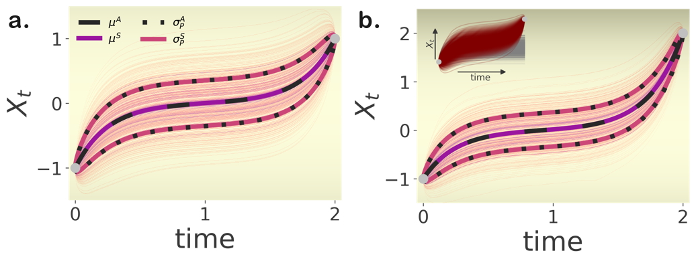

Dynamics of constrained densities
Biological and physical systems are often subjected to intrinsic or extrinsic noise sources that influence their dynamics. Characteristic examples include molecular reactions and chemical kinetics (Gillespie and Petzold 2003), populations of animal species, biological neurons (Saarinen, Linne, and Yli-Harja 2008), and evolution (Lande, Engen, and Saether 2003),(Takahata, Ishii, and Matsuda 1975). Stochastic differential equations (SDEs) effectively capture the phenomenology of the dynamics of such systems, at different precision scales by both considering deterministic and stochastic forces affecting their state variables \(X_t \in \mathcal{R}^d\) following
\[dX_t = f(X_t,t) dt + \sigma dW_t. \]
In Eq.\((1)\) the drift \(f(\cdot,\cdot): \mathcal{R}^d \times \mathcal{R} \rightarrow \mathcal{R}^d\) is a smooth typically nonlinear function that captures the deterministic part of the driving forces, while \(W\) stands for a k–dimensional (\(k\leq d\)) vector of independent Wiener processes acting as white noise sources, representing contributions from unaccounted degrees of freedom, thermal fluctuations, or external perturbations. We denote the noise strength by \(\sigma \in \mathcal{R}\)1, and define the noise covariance as \({D =\sigma ^2}\). In the following we refer to this system as the system.
Under multiple independent realisations, the stochastic nature of Eq.\((1)\) gives rise to an ensemble of trajectories starting from an initial state \(X_0=x_0\). This ensemble captures the likely evolution of the considered system at later time points. We may characterise the unfolding of this trajectory ensemble in terms of a probability density \(p_t(x)\), whose evolution is governed by the Fokker–Planck equation
\[\frac{\partial p_t(x)}{\partial t} = \nabla\cdot \left[- f(x,t) p_t (x) + \frac{\sigma^2}{2} \nabla p_t(x)\right]\] \[ \hspace{-57pt}= {\cal{L}}_f^\dagger p_t(x) ,\]
with initial condition \(p_0(x) = \delta(x-x_0)\), and \(\mathcal{L}_f^\dagger\) denoting the Fokker–Planck operator. Due to the stochastic nature of the system of Eq.\((1)\), exact pinpointing of its state at some later time point \(T\) is in general not possible.
Yet, often, we desire to drive biophysical and biochemical stochastic processes to predefined target states within a specified time interval. Characteristic examples include designing artificial selection strategies for population dynamics (Nourmohammad and Eksin 2021), or triggering phenotype switches during cell fate determination (Wells, Kath, and Motter 2015). Similar needs for manipulation are also relevant for non-biological, but rather technical systems, e.g. for control of robotic or artificial limbs (Todorov 2005), (Todorov 2004). In all these settings, external system interventions become essential.
Here, we are interested in introducing constraints \(\mathcal{C}\) to the dynamics of the system of Eq.(\(1\)) acting within a predefined time interval \({0 \leq t \leq T}\). The set of possible constraints \(\mathcal{C}\) comprises terminal \(\chi(X_T)\), and/or path constraints $U(x,t), tT $, depending on whether the desired limiting conditions apply for the entire interval or only to the terminal time point. The path constraints $U(x,t): ^{d} $ penalise specific trajectories (paths) to render specific regions of the state space more (un)likely to be visited, while the function \(\chi(x): \mathcal{R}^{d} \rightarrow \mathcal{R}\) influences the terminal system state \(X_T\).
To incorporate the constraints \(\mathcal{C}\) into the system, we define a modified dynamics, the controlled dynamics, through a change of probability measure of the path ensemble \(\mathbb{P}_f\) induced by the uncontrolled system. More precisely, we consider the path measure \(\mathbb{Q}\) (Appendix A), induced by the controlled system, as equivalent to a reweighting of paths \(X_{0:T}\) generated from the uncontrolled dynamics (Eq.\((1)\)) over the time interval \([0,\; T]\). Individual path weights are thus given by the likelihood ratio (Radon–Nikodym derivative)
\[\frac{d\mathbb{Q}}{d\mathbb{P}_f} (X_{0:T}) = \frac{\chi(X_T)}{Z} \exp\left[- \int_0^T U(X_t,t) dt \right],\]
where \(Z\) denotes the normalising constant
\[Z = \Bigg \langle \chi(X_T) \exp\left(- \int_0^T U(X_t,t) dt \right) \Bigg\rangle_{\mathbb{P}_f},\]
and \(\langle \cdot \rangle_{\mathbb{P}_f}\) denotes the expectation over paths of the uncontrolled system.
According to the Girsanov’s theorem, the controlled process defined by the weights of Eq.\((4)\) is also a diffusion process with the same diffusion constant \(\sigma\), but with a modified, time-dependent drift function \(g(x,t): \mathcal{R}^d \times \mathcal{R} \rightarrow \mathcal{R}^d\) (Girsanov 1960), (Øksendal 2003). Thus, we express the controlled dynamics as a time- and state- dependent perturbation \(u(x,t): \mathcal{R}^d \times \mathcal{R} \rightarrow \mathcal{R}^d\) of the deterministic forces \(f(x,t)\) acting on the system
\[ dX_t = \Big( f(X_t,t) + u(X_t,t) \Big) \; dt + \sigma dW_t \] \[= \hspace{25pt}g(X_t,t)\;\hspace{5pt} dt \hspace{30pt}+ \sigma dW_t.\]
Our goal is to identify the optimal time- and state-dependent interventions \(u(x,t)\) that minimise intervention costs and path constraints captured by the cost function
\[S(x,u,t) = \frac{1}{2} u(x,t)^T H u(x,t)+ U(x,t),\]
while also drive the system towards a predefined target state \(x^*\) by time \(T\), if a terminal constraint is pertinent. The first part of the cost function penalises large intervention values \(u(x,t)\), with \(H \in \mathcal{R}^{d \times d}\) determining the cost of intervention along each system dimension, whereas the path cost \(U(x,t)\) constrains the transient behaviour of the system.
Solutions of this type of stochastic control problems rest on the Bellman’s principle of optimality, according to which an optimal solution over an interval \([0,\;T]\) consists of optimal sub-solutions over the respective sub-intervals \([t',\;T]\) with later starting times \(t'\), and appropriate initial conditions (Bellman 1956). This sequence of sub-problems with interdependent initial conditions requires the cost function \(S(x,u,t)\) to be minimized over the entire time interval \([0,\;T]\). Therefore, here, we minimize the total expected cost in that interval defined as the sum of the terminal cost \(\chi(X_T)\) and the time integrated path and intervention costs
\[ J(x,t=0) = \min_{u} \Big\langle \int_{t=0}^T S(x,u,t') \, dt' - \ln \chi(X_T) \Big\rangle_{\mathbb{Q}}. \] In Eq.\((6)\), the brackets \(\langle \cdot \rangle_{\mathbb{Q}}\) denote the expectation over the entire path probability measure \(\mathbb{Q}\).
To establish the optimality of the interventions, we demand the cost functional \(J(x,t)\) to follow the Hamilton–Jacobi–Bellman (HJB) equation,
\[ -\frac{\partial}{\partial t} J(X_t,t) = \min_u \Bigg[ \frac{1}{2} u^T(X_t) H u(X_t) + U(X_t,t)\] \[\hspace{95pt} + g(X_t,t) \nabla_x J(X_t,t) + \frac{1}{2} \text{Tr}[D \frac{\partial^2}{\partial x^2} J(X_t,t)] \Bigg] \] a nonlinear partial differential equation (PDE) with a terminal condition \(J(x,T)= \ln \chi(X_T)\), which is, therefore, solved backwards in time. The gradient of the solution of this equation
\[u^*(x,t) = - H^{-1} \nabla J(x,t),\]
provides the optimal state- and time-dependent interventions for the considered system with constraints \(\mathcal{C}\). Yet, without investigating the structure of the solution, direct solving a second-order nonlinear PDE requires computationally demanding calculations, that grow exponentially with increasing system dimension.
To simplify matters, we linearise the Hamilton–Jacobi–Bellman equation by employing a logarithmic variable transformation, \(J(x,t) = - \log( \phi(x,t))\), proposed initially by Nelson in (Nelson 1967), and introduced in the context of stochastic control by Fleming in (Fleming 1977) (Hopf-Cole transform). This requires the minimal assumption of the control costs \(H\) and noise covariance \(D\) being inversely proportional along each state dimension, \(H \propto D^{-1}=\sigma^{-2}\), known in the literature as the path integral control condition (Kappen 2005).
The logarithmic variable transformation allows us to express the resulting controlled drift
\[g(x,t) = f(x,t) + \sigma^2 \nabla \ln \phi(x,t), \]
in terms of the solution $_t(x) (x,t) $ of a linear backward partial differential equation
\[\frac{\partial \phi_t(x)}{\partial t} + {\cal{L}}_f \phi_t(x) - U(x,t) \phi_t(x) = 0 ,\]
with terminal condition $_T(x) = (X_T) $, and with \(\mathcal{L}_f\) denoting the adjoint Fokker–Planck operator.

References
Footnotes
For the sake of brevity, we consider here a state independent diffusion, but the formalism easily generalises for a state dependent diffusion \(\sigma(x)\), as outlined in the Appendix.}↩︎